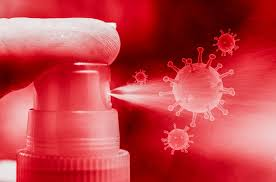

Cuidado de la Salud
La limpieza del hogar es vital. La Química farmacéutica y consultora en calidad e inocuidad Edith Armanetti explica que estos días ante la llegada del coronavirus la limpieza se debe incrementar. En realidad, señala, hay que volver a las prácticas que nunca deberíamos haber dejado atrás: quitarnos los zapatos para ingresar a la casa, dejar ventilar la ropa al llegar, mantener los pisos limpios, sanitizar los pestillos de las puertas con alcohol así como las superficies con las que estamos en contacto.
Fundamental
El lavado de manos también es fundamental y es preferible utilizar agua y jabón. Sin embargo, el uso de alcohol en gel no está mal para los casos en que no podemos acceder a lo primero. Esta práctica debe realizarse no solo al llegar de afuera sino también al permanecer dentro del hogar. Para la desinfección de superficies se puede utilizar agua y jabón o alcohol 70%.
Si vivís en un edificio probablemente también te preocupe la higiene de los lugares comunes y transitados como el ascensor y el portero eléctrico. ¿Cómo debemos procurar que estos espacios se mantengan seguros? Una de las recomendaciones es aumentar la periodicidad de la limpieza.